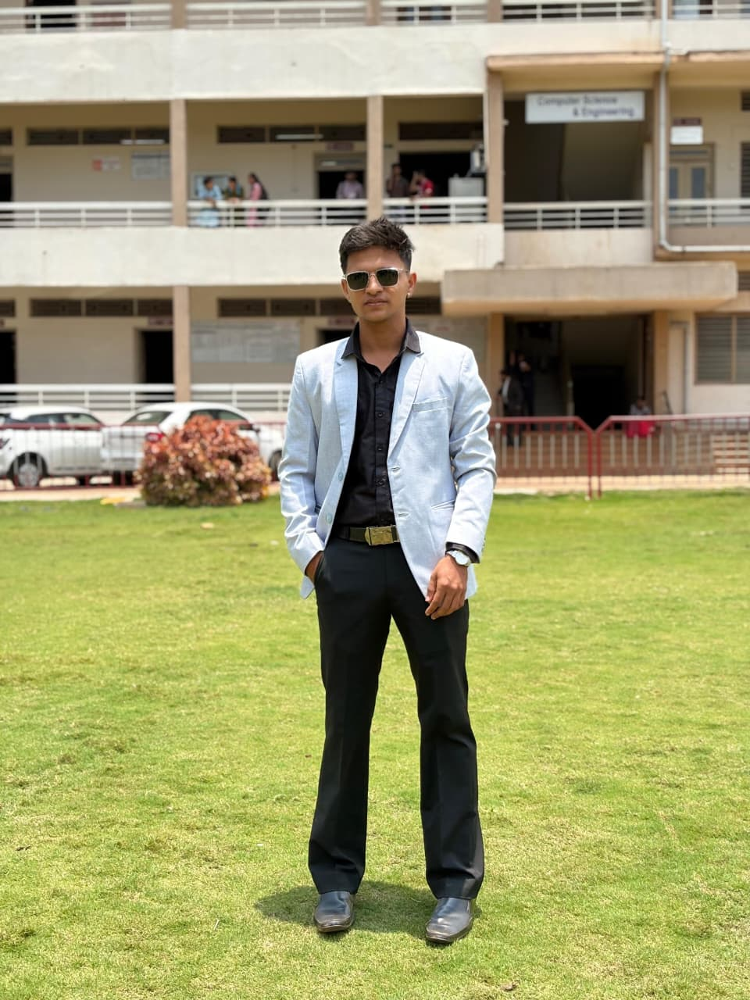
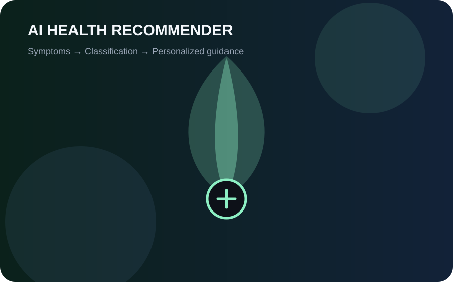
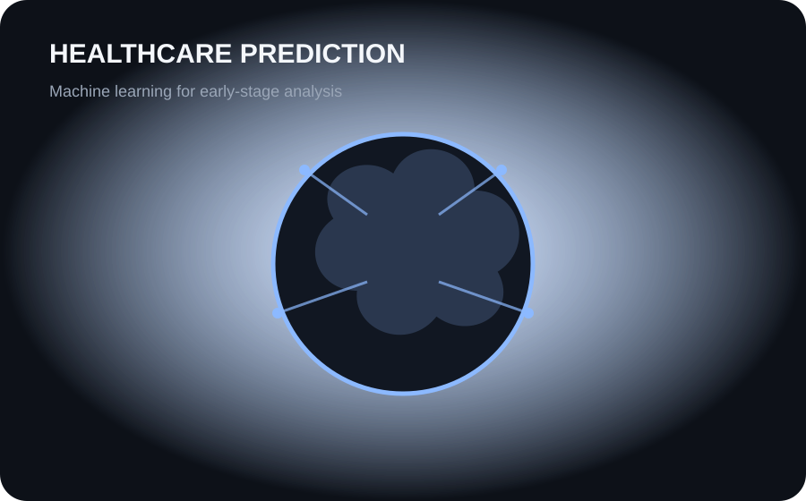
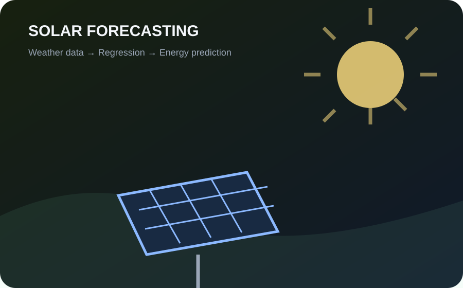

AI / ML · DATA SCIENCE
Hi! I'm Rahul,
a passionate ML Engineer
I love learning new technologies, solving problems, and turning ideas into practical AI applications.
9 moAI & ML internship
6 moData Science internship
8.1B.E. CGPA / 10

OPEN TO WORK
ABOUT.ME
Turning data into
useful intelligence.
Aspiring Data Scientist and AI/ML Engineer with hands-on experience in Machine Learning, Deep Learning, Predictive Analytics and Data Visualization.
I enjoy taking projects from data cleaning and feature engineering through model evaluation, deployment and practical user-facing applications.
SKILLS.SCAN
Technical toolkit
Tools and technologies I use to build data-driven applications.
AI / ML & Data Science
Libraries & Frameworks
Tools & Platforms
EXPERIENCE.LOG
My experience
AI & ML Intern
VTU Visvesvaraya Research & Innovation Foundation (VRIF), Belagavi
- Developed and evaluated supervised Machine Learning models using Python and Scikit-learn.
- Performed data cleaning, transformation and Exploratory Data Analysis on structured datasets.
- Built end-to-end ML pipelines with feature engineering and model optimization.
- Evaluated models using accuracy, precision, recall and F1-score.
Data Science Intern
ExcelR Solutions, Bengaluru
- Executed end-to-end Data Science workflows on structured datasets.
- Performed data cleaning, feature engineering and predictive model building using Python and Scikit-learn.
- Delivered analytical reports and data-driven insights supporting business decision-making.
PROJECTS.DETECTED
Things I've built
Selected machine learning and AI projects from my resume.

01 · AI RECOMMENDERAI APPLICATION
AI Ayurvedic Home Remedy Recommendation System
A conversational recommendation tool that maps symptoms to suitable Ayurvedic home-remedy suggestions.

02 · HEALTHCARE MLHEALTHCARE ML
Alzheimer's Disease Prediction
A healthcare analytics application that uses Gradient Boosting to support early-stage risk analysis, with an interactive Streamlit interface.

03 · PREDICTIVE ANALYTICSPREDICTIVE ANALYTICS
Solar Power Generation Prediction
A forecasting application that combines environmental and weather inputs to estimate renewable energy generation.
EDUCATION.TIMELINE
Academic journey
B.E. — Computer Science & Engineering
S G Balekundri Institute of Technology, Belagavi
CGPA · 8.1 / 10Pre-University Course
SGVS Mahesh PU College, Belagavi
82%Secondary School
Morarji Desai Residential School, Gokak
93%CERTIFICATIONS.VERIFIED
Certifications
Python for Data Science
SQL for Data Analytics
Data Science — ExcelR Solutions, Bengaluru
Internship Completion — VTU VRIF, Belagavi
CONTACT.TRANSMIT
Let's build something
intelligent.
I'm open to Data Science, AI/ML and related opportunities.